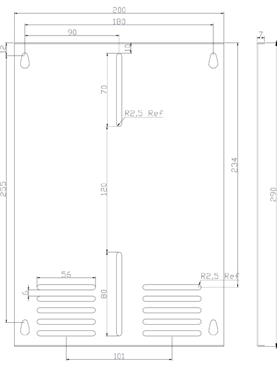

Siempre es más fácil conocer las normas ENEL-CODENSA
Rolex Rolex gold watch, compared with ordinary materials, gold watches are often expensive, but the replica rolex gold watch has the role of swiss replica watches hedging, so that it often becomes the first choice for collectors. The gold watch has value in the world, largely because the omega replica watch brand launched a commemorative limited edition watch or a replica hublot complex movement process or artistic attainments deep watches, mostly preferred gold precious metals such material. These watches tend to have a strong hedging function, therefore, Rolex Rolex gold watch reputation.

ET919 Caja para medidores de macromedición
Datos adicionales
Número de especificación
ET 919
Fecha de vigencia
23/11/2009
Herramientas adicionales
- Contenido Ocultar
- 1. OBJETO DE LA ESPECIFICACIÓN
- 2. ALCANCE
- 3. CONDICIONES DE SERVICIO
- 4. SISTEMA DE UNIDADES
- 5. NORMAS DE FABRICACIÓN Y PRUEBAS
- 6. REQUERIMIENTOS TÉCNICOS PARTICULARES
- 6.1 Características Generales
- 6.2 Características geométricas y de construcción
- 6.3 Proceso de pintura
- 6.4 Marcación
- 7. CRITERIOS DE ACEPTACIÓN O RECHAZO
- 7.1 Muestreo
- 7.2 Aceptación o Rechazo
- 8. PRUEBAS
- 8.1 Certificados de materiales
- 8.2 Inspección Dimensional
- 8.3 Inspección Visual
- 8.4 Inspección funcional
- 8.5 Prueba contra impacto (Código IK)
- 8.6 Ensayo de grado de protección (Código IP)
- 8.7 Resistencia a la corrosión
- 8.8 Espesor de la pintura
- 8.9 Ensayo de adherencia por tracción a pintura.
- 8.10 Análisis químico a bornera de puesta a tierra
- 8.11 Cámara de amoniaco a bornera de puesta a tierra
- 8.12 Ensayo de corto circuito a bornera de puesta a tierra
- 8.13 Calentamiento estático a borneras de puesta a tierrra
- 8.14 Ensayo de tracción a bornera de puesta a tierra
- 8.15 Ensayo de seguridad de montaje a bornera de puesta a tierra
- 8.16 Ensayo de ensamble a bornera de puesta a tierra
- 9. EMPAQUE
- 10. INSPECCIÓN EN FÁBRICA
- 11. CERTIFICADOS DE CONFORMIDAD
- 12. PRESENTACIÓN DE LAS OFERTAS
- 13. GARANTÍA DE FÁBRICA
1. OBJETO DE LA ESPECIFICACIÓN
Establecer las condiciones que deben satisfacer las cajas para medidores de macromedición, las cuales deben poseer excelentes características técnicas de desempeño, durabilidad y calidad para cumplir las condiciones actuales de desempeño en los sistemas de distribución de energía de BT. Se utiliza para instalar medidores con conexión semindirecta en BT.2. ALCANCE
La presente especificación se aplicará a todas las cajas para medidores de macromedición que adquiera CODENSA S.A. ESP.3. CONDICIONES DE SERVICIO
Las cajas para medidores de macromedición serán utilizadas en el sistema de baja tensión del área de concesión de CODENSA S.A. E.S.P, bajo las siguientes condiciones:| CARACTERÍSTICAS AMBIENTALES | |
| a. Altura sobre el nivel del mar | 1 500 a 2 640 m |
| b. Ambiente | Tropical |
| c. Humedad | Mayor al 90 % |
| d. Temperatura máxima y mínima | 45 ºC y - 5 ºC respectivamente. |
| e. Temperatura promedio | 20 ºC. |
| f. Instalación | A la intemperie, sujeción al poste. |
| CARACTERÍSTICAS ELÉCTRICAS | |
| a. Tensión Nominal del sistema | |
| Línea - Línea | 208V |
| Línea – Neutro | 120 V |
| b. Tensión máxima | 600 V |
| c. Disposición del sistema | Trifásico tetrafilar (3 Fases + Neutro) |
| d. Frecuencia del sistema | 60 Hz |
4. SISTEMA DE UNIDADES
En todos los documentos técnicos se deben expresar las cantidades numéricas en unidades del sistema Internacional (S.I.). Si se usan catálogos, folletos o planos, en sistemas con diferentes unidades, deben hacerse las conversiones respectivas.5. NORMAS DE FABRICACIÓN Y PRUEBAS
| NORMA | DESCRIPCIÓN | |
| ASTM | B117 | Prueba de Cámara Salina |
| ASTM | D14000 | Medición de espesores de recubrimiento |
| IEC | 29 | Degrees of protection provided by enclosures. |
| IEC | 144 | Degrees of protection of enclosures for low voltage switchgear and control gear”. |
| ISO | 2859-1 | Muestreo para inspección. |
| NTC | 2154 | Bloques de Terminales para uso industrial. |
| NTC | 3279 | Grados de protección dados por encerramiento de equipo eléctrico código IP. |
| NTC | 3916 | Método de ensayo para la resistencia a la tracción de recubrimientos, utilizando probadores portatiles de adherencia. |
| UL | 486A | Wire connectors and soldering lugs for use with cooper conductors |
| UL | 1059 | Terminal Blocks |
Las normas citadas en la presente especificación (o cualquier otra que llegare a ser aceptada por CODENSA S.A.) se refieren a su última revisión.
6. REQUERIMIENTOS TÉCNICOS PARTICULARES
6.1 Características Generales
Las cajas para medidores de macromedición requeridas por CODENSA S.A. deben cumplir con las siguientes condiciones:a. Ser construidas con materiales de la mejor calidad debiéndose descartar el empleo de materiales alterables por la humedad, radiación solar y otras condiciones ambientales desfavorables.
b. Ser Autosoportable, compacta, liviana y con una estructura completamente rígida e indeformable, sin aristas, bordes ni esquinas vivas, agudas o cortantes.
c. La posición de trabajo de la caja será vertical, para facilitar la lectura del medidor.
d. Debe ser construida en forma embutida en lámina de acero SAE 1010 ó similar autorizada por CODENSA S.A.
e. El calibre de la lámina sin pintura debe ser como mínimo calibre 20 (0.912 mm).
f. Tener un índice de hermeticidad IP44 de acuerdo a la norma IEC 529, y con grado de protección contra choques IK 10 (20,0. julios).
g. El cuerpo debe estar compuesto por: Base y Tapa, los cuales deberán poseer todos los accesorios necesarios y suficientes para su correcta utilización, funcionamiento y fácil transporte.
h. Aptas para ser instaladas sobrepuestas en postes de concreto con alimentación trifásica tetrafilar desde las redes de distribución (120 / 208 V) con los siguientes objetivos:
- Alojar y facilitar la instalación de un medidor trifásico, de forma que el acceso a las conexiones sea exclusivo para el personal autorizado por CODENSA S.A.
- Facilitar la lectura del medidor, las revisiones de la instalación y demás trabajos.
i. La sujeción al poste de concreto podrá efectuarse con una cinta de acero inoxidable de 5/8" (Band it).
6.2 Características geométricas y de construcción
Las cajas para medidores de macromedición serán de la forma y dimensiones que se muestran en las figuras anexas, teniendo en cuenta:| DIMENSIONES GENERALES CAJA EMBUTIDA PARA MEDIDOR DE MACROMEDICIÓN | |||
| ITEM | BASE sin pestañas | TAPA sin pestañas | CAJA |
| Ancho [mm] | 220 | 220 | 244 |
| Alto [mm] | 395 | 395 | 420 |
| Profundidad [mm] | 109 | 134 | 244 |
La base de la caja debe poseer perforaciones pretroqueladas para tubos metálicos, con las siguientes características:
| PERFORACIONES PRETROQUELADAS CAJA EMBUTIDA PARA MEDIDOR DE MACROMEDICIÓN | |||
| ÍTEM | DIÁMETRO Pretroquelado | DIÁMETRO Conduit | CANTIDAD Pretroquelados |
| Cara inferior de la caja | 23mm | 1" | 1 |
Al interior de la caja se encuentra una bandeja trifásica de dimensiones 200x190 mm, instaladas al cuerpo de la caja sobre cuatro sobre cuatro pernos roscados de f1/4” x 140 mm de largo con doble tuerca, como se indica en la figura 2 de la presente especificación. Para permitir el ensamble del medidor a la bandeja, cada bandeja tiene ensamblado un juego de: Tres tornillos, tres tuercas zincadas, tres arandelas de presión, tres arandelas planas para tornillo N°8 - 32UNC x 5/8 longitud. Todos los componentes deben estar zincados.
En la cara inferior se debe perforar el cuerpo con un diámetro de 25.4 mm para ensamblar un tapon removible - pasacables de 1".
De acuerdo al numeral 6.1.i, en la parte posterior de la base tendrá platinas centradas, ubicadas y unidas garantizando una alta resistencia al vandalismo.
6.2.2 Tapa
En el área frontal superior, en la cara inclinada de la tapa, se ubica la ventana de inspección con un marco (145 x 120 mm) y una transparencia de seguridad en policarbonato de alto impacto con un espesor de 3 mm min.(125mm x 100mm). El marco y el visor únicamente se podrán desensamblar desde el interior de la caja.
En el area frontal se ubica la lupa de inspección con un marco (145 x 120 mm) y una lupa de seguridad en policarbonato de alto impacto con un diámetro 106 minimo (125 mm x 100 mm). El marco y la lupa únicamente se podrán des-ensamblar desde el interior de la caja.
Tendrá un orificio de 16 mm para ensamblar el buje del sistema de seguridad a la tapa con un anillo seeger para exteriores. A su vez, el buje debe permitir el ensamble de un perno de cabeza triangular RW ¼” y del sello de seguridad de CODENSA S.A. E.S.P. con una perforación de 1,3 mm. La localización del centro del perno cabeza triangular debe ser concéntrica con la rosca que lo recibe. Tanto el perno cabeza triangular como la llave para accionarlo, serán suministrados por el fabricante únicamente a CODENSA S.A. E.S.P. y podrán ser reemplazados por un perno de seguridad antifraude suministrado por CODENSA S.A. E.S.P.
La caja debe ser fabricada con un marco alrededor de la tapa con una pestaña en la que se pegará al interior un empaque de caucho esponjoso, de forma que permita el ajuste y cierre con la base, evitando el ingreso de agua al interior de la caja, las intervenciones y el acceso no autorizado o fraudulento de los usuarios o extraños.
6.2.3 Borneras
El material de la bornera debe ser cobre o aleación de cobre que cumpla con los requerimientos.
La corriente especificada en esta sección para las borneras, es la capacidad de corriente de la misma. Para la ejecución de los ensayos requeridos en esta especificación se debe aplicar las corrientes de ensayo especificada en la normas de referencia para el conductor máximo de instalación y cuando CODENSA, S.A. lo requiera se ejecutaran con lo conductores máximo, mínimo e intermedio, usados en la instalación de las borneras con sus correspondientes corrientes de ensayo.
6.2.3.1. Bornera a tierra
Al interior de la caja, debe contener una bornera de puesta a tierra sujeta a la carcaza de la caja para aterrizar el neutro, los conductores de continuidad eléctrica y el electrodo de puesta a tierra. Con una capacidad no inferior de 85 A, debe permitir la alimentación con un conductor desde 8 AWG hasta el 4AWG; para lo que debe tener un alojamiento.
6.2.3.2. Sistema compresión conductor
El sistema elegido para comprimir el conductor debe garantizar su correcta sujeción sin que se presente:
a. Desconexiones accidentales de la alimentación secundaria o de las acometidas.
b. Daños al conductor como rotura o el tronzado de alguno de los hilos.
c. Anomalías por esfuerzos mecánicos y eléctricos y térmicos que generen fallas en la sujeción o conexión.
6.3 Proceso de pintura
La lámina de acero utilizada en la construcción de las cajas debe someterse a un tratamiento de limpieza, el cual debe garantizar que las superficies estén libres de grasas, óxidos o cualquier elemento extraño, se debe aplicar una pintura de color gris RAL serie 70 (similar al RAL 7032), resistente a los rayos ultravioleta.Para procesos de recubrimiento con pintura líquida, luego del proceso de limpieza y fosfato, se debe aplicar una base de pintura epóxica con un espesor en las áreas interior y exterior de 50 µm, luego se debe aplicar un recubrimiento de pintura poliéster o acrílica con un espesor en el área exterior de 50 µm mín. y en el área interior de 25 µm mín. El total de la capa de recubrimiento será de 100 µm mín. en el área exterior y 70 µm mín. en el área interior de recubrimiento.
Para procesos de recubrimiento con pintura electrostática en polvo, luego del proceso de limpieza y fosfato, se debe aplicar un recubrimiento de pintura epoxipoliester. El total de la capa de recubrimiento será mínimo de 65 µm mín en el área exterior y de 50 µm mín en el área interior de recubrimiento.
6.4 Marcación
La caja tendrá grabado en alto relieve:a. Inscripción en letras mayúsculas que diga “USO EXCLUSIVO DE CODENSA” en la parte superior central de la tapa.
b. Logotipo o nombre del fabricante, el tamaño de la letra será de 6mm mínimo.
c. Símbolo de puesta a tierra en la parte posterior e inferior del cuerpo de la caja.
Ademas para dar cumplimiento al RETIE en la marcación se debe incluir la siguente información (placa o calcomania):
- 208/120V
- 5A
- 3F, 4H
- Símbolo de riesgo electrico con las minimas dimensiones indicadas en el art. 11.2.2 y art. 11.3 del RETIE.
Para compras realizadas por CODENSA S.A ESP se debe incluir la palabra BOG-CUN y la orden de compra.
7. CRITERIOS DE ACEPTACIÓN O RECHAZO
Para este caso se considerará que existe un lote cuando:a. Los materiales de producción pertenecen a un mismo lote de materia prima.
b. Las cajas se construyen en un solo lote de producción.
7.1 Muestreo
El muestreo se realizará con base en los procedimientos y tablas estipuladas en la norma NTC-ISO 2859-1 “Procedimientos de muestreo para Inspección por Atributos. Parte 1: Planes de muestreo determinados por el nivel aceptable de calidad para inspección lote a lote” y se acordará por las partes, previamente a la fecha de la realización de las pruebas y recepción de los bienes.Para el desarrollo de las pruebas es indispensable que los instrumentos involucrados estén calibrados.
7.2 Aceptación o Rechazo
Si el número de elementos defectuosos es menor o igual al correspondiente número de defectuosos (dado en la norma NTC-ISO 2859-1 en la tercera columna de las Tablas 1 y 2), se deberá considerar que el lote cumple con los requisitos técnicos exigidos por CODENSA S.A., pero en caso contrario, el lote se rechazará.TABLA 1.
PLAN DE MUESTREO PARA INSPECCIÓN VISUAL Y DIMENSIONAL (NIVEL DE INSPECCIÓN II, NAC = 2,5%)(NORMA NTC-ISO 2859-1 TABLA1 - TABLA 2A)
| TAMAÑO DEL LOTE | TAMAÑO DE LA MUESTRA | NUMERO PERMITIDO DE DEFECTUOSOS | NUMERO DEFECTUOSOS PARA RECHAZO |
| 2 a 8 | A = 2 | 0 | 1 |
| 9 a 15 | B = 3 | 0 | 1 |
| 16 a 25 | C = 5 | 0 | 1 |
| 26 a 50 | D = 8 | 1 | 2 |
| 51 a 90 | E = 13 | 1 | 2 |
| 91 a 150 | F = 20 | 1 | 2 |
| 151 a 280 | G = 32 | 2 | 3 |
| 281 a 500 | H = 50 | 3 | 4 |
| 501 a 1200 | J = 80 | 5 | 6 |
| 1201 a 3200 | K =125 | 7 | 8 |
| 3201 a 10000 | L =200 | 10 | 11 |
PLAN DE MUESTREO PARA LOS ENSAYOS MECÁNICOS (NIVEL DE INSPECCIÓN ESPECIAL S-3, NAC = 2,5%)(NORMA NTC-ISO 2859-1 TABLA1 - TABLA 2A)
| TAMAÑO DEL LOTE | TAMAÑO DE LA MUESTRA | NUMERO PERMITIDO DE DEFECTUOSOS | NUMERO DEFECTUOSOS PARA RECHAZO |
| 2 a 8 | A = 2 | 0 | 1 |
| 9 a 15 | A = 2 | 0 | 1 |
| 16 a 25 | B = 3 | 0 | 1 |
| 26 a 50 | B = 3 | 0 | 1 |
| 51 a 90 | C = 5 | 1 | 2 |
| 91 a 150 | C = 5 | 1 | 2 |
| 151 a 280 | D = 8 | 1 | 2 |
| 281 a 500 | D = 8 | 1 | 2 |
| 501 a 1200 | E = 13 | 1 | 2 |
| 1201 a 3200 | E = 13 | 1 | 2 |
| 3201 a 10000 | F = 20 | 1 | 2 |
Para efectuar cualquier despacho, es requisito indispensable una autorización escrita de CODENSA S.A., la cual será expedida con base en los resultados de las pruebas realizadas en fábrica y/o la aprobación del protocolo de pruebas realizadas por el fabricante a los bienes solicitados.
8. PRUEBAS
El fabricante deberá remitir los protocolos de los siguientes ensayos realizados por un laboratorio acreditado ante la Superintendencia de Industria y Comercio SIC, o un organismo internacional reconocido para la elaboración de prueba.Las cajas de medidores deben cumplir con:
a. Certificados de materiales.
b. Inspección dimensional, inspección visual y funcional.
(acople de la tapa).
c. Prueba contra impacto (código IK).
d. Ensayo de grado de protección (código IP).
e. Resistencia a la corrosión.
f. Espesor de pintura.
g. Ensayo de adherencia por tracción a pintura.
h. Ensayo de corto circuito a bornera de puesta a tierra.
i. Ensayo de calentamiento estático a bornera de puesta a tierra.
j. Ensayo de tracción a bornera de puesta a tierra.
k. Ensayo de seguridad de montaje a bornera de puesta a tierra.
l. Ensayo de ensamble a bornera de puesta a tierra.
8.1 Certificados de materiales
En las cajas metálicas debe hacerse los siguientes análisis químicos:- Certificado de análisis químico de la lámina del fabricante (subproveedor).
- Certificado del tipo de pintura del fabricante (subproveedor).
- Certificado del policarbonato del fabricante (subproveedor).
- Composición química de la bornera.
8.2 Inspección Dimensional
La verificación de las dimensiones se hará con los instrumentos de medida que den la aproximación requerida (cinta metálica con divisiones de 1 mm para longitudes y calibrador para los diámetros y espesores). El tamaño de la muestra deberá estar de acuerdo con la Tabla 1.Se verificará con base a:
a. Esquemas indicados en las figuras anexas a la presente especificación y tablas contenidas dentro de esta especificación.
b. Planos entregados por el fabricante y aprobados por CODENSA S.A. E.S.P.
Las tolerancias generales son:
a. Para la tapa y la base: ± 3 mm,
b. Perno, Buje, platina y llave del sistema de seguridad: ± 0.5 mm.
8.3 Inspección Visual
Se verificará:a. Las marcaciones descritas en el numeral 6.4.
b. La buena terminación de todos los elementos constitutivos de la tapa y sus accesorios.
c. La ausencia de grietas, sopladuras, poros, exfoliaduras, ampolladuras, raspaduras u otros defectos.
8.4 Inspección funcional
Se verificará el correcto acople de la tapa al cuerpo, el adecuado funcionamiento del dispositivo de cierre (incluyendo cambio de tornillo y el agarre de los anillos para exteriores - seeger).8.5 Prueba contra impacto (Código IK)
El ensamble de la ventana de inspección y el de la lupa (marco y transparencia de seguridad) a la tapa y el ensamble del cuerpo y la puerta deben ser resistentes al impacto de martillo pendular de 5kg a 20 julios. Luego del impacto, la caja debe conservar su grado de protección IP manteniendo su funcionalidad en la apertura y cierre de la puerta, adiconalmente, no se deben presentar roturas en el lente ni en el marco y el conjunto debe permanecer ensamblado.8.6 Ensayo de grado de protección (Código IP)
El índice de hermeticidad para las cajas será IP44, este grado de protección se verificará de acuerdo a la norma NTC3279 (IEC 529).8.7 Resistencia a la corrosión
Las muestras deben ser nuevas y libres de grasa, aceite, polvo y otras impurezas. A dichas muestras se les hacen dos incisiones de 0,5mm de espesor, en forma de cruz que llegue hasta el substrato.El ensayo de corrosión se realizará de acuerdo con la norma ASTM B 117 (Prueba de Cámara Salina) bajo las siguientes condiciones: Temperatura= 35°C, ph= 6,5-7,2 y concentración de cloruro de sodio al 5% durante 400 horas. Tiempo al que se verificará:
a. La progresión de la corrosión en la incisión, debe ser inferior a 2mm.
b. No deben presentar trazas de corrosión ni burbujas.
c. El recubrimiento debe permanecer adherido a la capa de pintura conservando su color.
d. Los cierres y medios de acceso deben funcionar normalmente, esto, cuando se someta una caja a cámara salina.
8.8 Espesor de la pintura
El espesor de pintura debe medirse con un medidor de espesores debidamente calibrado según la norma ASTM D 14000 y el espesor mínimo debe estar de acuerdo con el númeral 6.3Para la medición de los espesores de recubrimiento tener en cuenta las siguientes definiciones:
a. Lectura del espesor: Medida que muestra el medidor de espesores, al colocar una vez el sensor sobre la pieza a medir.
b. Medida del espesor: Promedios de 3 lecturas de espesor tomadas a una distancia aproximada de 2,5 cm.
8.9 Ensayo de adherencia por tracción a pintura.
Todas las capas de pintura deben garantizar una adherencia mínima de todas y de cada una de las capas de 400 libras/pulg2, dichas capas serán evaluadas según Norma ASTM D 4541.8.10 Análisis químico a bornera de puesta a tierra
El certificado de composición química relacionado en el numeral 8.1 debe ser elaborado teniendo en cuenta la norma DIN 1709 o su equivalente. Para las borneras de cobre o aleación de cobre cuya composición química en zinc exceda el 15%, aplica el ensayo de cámara de amoniaco del numeral 8.11.8.11 Cámara de amoniaco a bornera de puesta a tierra
Las borneras de cobre o aleación de cobre, cuyo porcentaje de zinc sea superior al 15% no deben mostrar evidencia de fisuras luego de ser sometidas a la cámara de amoniaco con un aumento de 25X. Según norma UL 486A.8.12 Ensayo de corto circuito a bornera de puesta a tierra
Se debe ensayar la bornera con el conductor de calibre máximo de uso especificado en el numeral 6.2.3. de esta especificación.Para determinar el cumplimiento de este ensayo, se debe seguir la secuencia de actividades especificadas en la UL1059 con las corrientes y mediciones establecidas para borneras de tipo comercial o industrial.
8.13 Calentamiento estático a borneras de puesta a tierrra
Se debe ensayar la bornera con el conductor de calibre máximo de uso especificado en el numeral 6.2.3.1 de esta especificación.Para determinar el cumplimiento de este Ensayo, se debe seguir la secuencia de actividades especificadas en la NTC2154 para el calibre del conductor especificado.
8.14 Ensayo de tracción a bornera de puesta a tierra
Se aplicará a la bornera una fuerza de tracción correspondiente a la sección transversal del conductor, según valores establecidos en la NTC 2154, sin que el conductor se salga de la bornera ni la bornera se desprenda de la lámina.8.15 Ensayo de seguridad de montaje a bornera de puesta a tierra
Se monta una bornera sobre una placa de acero o un riel suministrado por el fabricante, a cada lado de la bornera se fija un pin de acero de longitud y diámetro establecidos en la NTC 2154. Se aplica gradualmente la fuerza indicada a una distancia de 100 mm del centro de la fijación, una vez en cada dirección, alternadamente sobre cada lado de la bornera.No se permiten golpes para aplicar la fuerza, una vez que se ha terminado el ensayo no se deben presentar deterioros en la bornera, ni soltarse algunos de los medios de montaje de la misma.
8.16 Ensayo de ensamble a bornera de puesta a tierra
De acuerdo con la norma NTC 2154, se monta una bornera sobre una placa de acero o un riel suministrado por el fabricante, se inserta el conductor y se aprietan los tornillos de fijación al 110% del torque especificado por el fabricante. Luego se deben aflojar los tornillos de fijación e insertar nuevos conductores apretándolos al 110% del torque, se repite el ensayo hasta completar 5 montajes usando las mismas borneras.Este procedimiento se debe efectuar para el conductor de mayor diámetro y el de menor diámetro; en ninguno de los dos casos debe presentarse deterioro de los tornillos, de la bornera ni del conductor
9. EMPAQUE
Toda caja para medidor debe ir completa y cerrada, debe protegerse contra rayaduras y daños dentro del transporte, para esto cada una debe embalarse en una caja de cartón grueso, en cuyo exterior debe indicarse en forma impresa el “nombre del fabricante”, propiedad de “CODENSA S.A.- E.S.P.”, descripción del producto “Caja para medidores de Macromedición”, número de contrato y código de inventario CODENSA S.A.- E.S.P.Para el transporte debe embalarse en estibas con un número de unidades no mayor a 50 unidades por estiba y la estiba recubierta y sellada con material plástico, sobre el cual se adherirá una etiqueta de por lo menos 30 x 30 cm que indique que no se puede almacenar más de dos estibas en sentido vertical.
10. INSPECCIÓN EN FÁBRICA
El suministrador enviará con no menos de quince (15) días calendario de anticipación, a la fecha programada para la realización de las pruebas en fábrica, el formato de protocolos de pruebas y copia de las normas en Inglés o Castellano utilizadas para tal fin. CODENSA informará por escrito su conformidad con las pruebas requeridas.El Ingeniero RESPONSABLE de CODENSA podrá inspeccionar en las instalaciones del PROVEEDOR o FABRICANTE y de sus Subcontratistas el proceso de fabricación y pruebas, y solicitar la información y ensayos que a su juicio resulten necesarias para verificar el cumplimiento de los requisitos estipulados en este documento.
El PROVEEDOR debe brindar plena colaboración al RESPONSABLE en el cumplimiento de sus funciones.
El valor de las pruebas y ensayos debe incluirse en los precios cotizados en la propuesta. CODENSA se reserva el derecho de descartar las propuestas que no ofrezcan pruebas, o si las ofrecidas son consideradas insuficientes para garantizar la calidad de las cajas.
11. CERTIFICADOS DE CONFORMIDAD
El oferente adjuntara con su propuesta el certificado del sistema de calidad y de conformidad del producto con norma técnica y RETIE, expedido por una entidad autorizada por la Superintendencia de Industria y Comercio para tal fin o a quien esta delegue.12. PRESENTACIÓN DE LAS OFERTAS
El oferente deberá presentar su oferta técnica (en medio impreso) en el siguiente orden:- ANEXO 1: Relación de los bienes cotizados.
- ANEXO 2: Información del oferente.
- ANEXO 3: Planillas de características técnicas garantizadas, la cual deberá ser diligenciada completamente, firmada y sellada por el oferente
- EXCEPCIONES TÉCNICAS: Apartado en el cual se deben relacionar las excepciones de carácter exclusivamente técnico de la oferta, respecto a los bienes solicitados. Si la oferta no presenta excepción, se indicaría expresamente en el mismo “NO HAY EXCEPCIONES”
- PROTOCOLO DE PRUEBAS: Relación de los ensayos realizados a la caja y a sus accesorios de acuerdo con lo indicado en el numeral 8 y segun las normas indicadas el numeral 5 de la presente especificación. En estos protocolos se deberán anotar las fechas de fabricación y pruebas realizadas, para permitir la verificación de las características técnicas garantizadas
- CERTIFICACIONES: Certificación del sistema de calidad y acreditación del producto con norma técnica y RETIE ante un ente competente en Colombia.
- EVIDENCIA TÉCNICA: Relación de clientes, evidencia de su capacidad técnica y experiencias relacionadas con los materiales y/o equipos cotizados.
- GARANTÍA: Carta de garantía de los bienes cotizados.
- NORMAS: Normas técnicas aplicables a los bienes cotizados.
- CATÁLOGOS: Catálogos originales completos y actualizados del fabricante, que correspondan a los bienes cotizados en la planilla de características técnicas garantizadas.
- MUESTRAS: Muestras de cada una de las referencias ofertadas sin cargo a devolución, con cada una de las características técnicas, solicitadas y mencionadas en la presente especificación
- INFORMACIÓN ADICIONAL: Información adicional que se considere aporta explicación al diseño de la caja (dibujos, detalles, dimensiones y pesos de los materiales ofertados), así como las instrucciones de instalación, operación y mantenimiento.
La oferta técnica deberá presentarse en carpeta blanca de tres aros (tipo catálogo), con separadores en el orden anteriormente señalado. Adicionalmente, el fabricante debe incluir la anterior información en formato electrónico en un CD o Disquete.
CODENSA S.A. podrá descartar ofertas que no cumplan con las anteriores disposiciones, sin expresión de causa ni obligación de compensación.
13. GARANTÍA DE FÁBRICA
CODENSA S.A E.S.P requiere como mínimo, un período de garantía de fábrica de veinticuatro (24) meses, a partir de la entrega de los bienes.
FIGURA 1. VISTA FRONTAL

FIGURA 2. VISTA CORTE LATERAL

FIGURA 3. VISTA INFERIOR

FIGURA 4. VISTA SUPERIOR

FIGURA 5: VISTA INTERIOR

BANDEJA PARA MEDIDOR TRIFASICO

FIGURA 6: VENTANA DE INSPECCION
")
FIGURA 7. TAPON REMOVIBLE - PASACABLES (forma sugerida)
FIGURA 8. PERNOS SISTEMA DE SEGURIDAD
.jpg "PERNOS SISTEMA DE SEGURIDAD")
PERNOS SISTEMA DE SEGURIDAD

FIGURA 9. BUJE DEL SISTEMA DE SEGURIDAD
FIGURA 10. LLAVE PARA PERNO DEL SISTEMA DE SEGURIDAD
.jpg "LLAVE PARA PERNO DEL SISTEMA DE SEGURIDAD")
LLAVE PARA PERNO DEL SISTEMA DE SEGURIDAD
ANEXO 1.
RELACION DE BIENES COTIZADOS
| ITEM | DESCRIPCION DEL MATERIAL | FABRICANTE | NORMA QUE CUMPLE | CANTIDAD (UNIDADES) |
| 1 | Caja para medidor de macromedición |
INFORMACION GENERAL DEL OFERENTE
| DATOS DEL OFERENTE | [ |
| RAZON SOCIAL (NOMBRE) DEL PROPONENTE | |
| PAIS | |
| CIUDAD | |
| DIRECCIÓN | |
| TELÉFONO | |
| FAX | |
| PAGINA WEB | |
| PERSONA DE CONTACTO | |
| La persona de contacto, es la responsable de la oferta técnica a la cual se acudirá en caso de consulta o aclaración. | |
CARACTERÍSTICAS TÉCNICAS GARANTIZADAS
| CAJAS EMBUTIDAS PARA MEDIDORES DE MACROMEDICIÓN | ||||
| ITEM | ELEMENTO | CARACTERÍSTICA | OFERTADO | |
| 1 | Proponente | País de fabricación | ||
| Fabricante | ||||
| Representante del fabricante | ||||
| 2 | Normas | Fabricación y pruebas | ||
| 3 | Características eléctricas | Tensión nominal [V] | ||
| 4 | Componentes Cuenta con: | Bandeja portamedidor (si/no) | ||
| Lente policarbonato (si/no) | ||||
| Lente lupa (si/no) | ||||
| Bornera de Puesta a Tierra (si/no) | ||||
| Sistema compresión del conductor en la bornera: | ||||
| Caucho esponjoso (si/no) | ||||
| Diámetro y número de pretroquelados En la parte superior En la parte inferior | ||||
| Especificar juego de tres tornillos zincados, tuercas zincadas, arandelas de presión zincadas para tornillo, tres arandelas planas zincadas para tornillo (si/no) | ||||
| Tornillo cabeza triangular RW 1/4" (si/no) | ||||
| Buje en zamack para sistema de seguridad (si/no) | ||||
| Llave para tornillo cabeza triangular (si/no) | ||||
| 5 | Acabado | Sin grietas, sopladuras, poros, exfoliaduras, ampolladuras, raspaduras u otros defectos | ||
| 6 | Marcación | Logo: Terminal de puesta a tierra | ||
| Texto: "USO EXCLUSIVO CODENSA" | ||||
| Información del Fabricante | ||||
| Informacion adicional indicada en numeral 6.4 | ||||
| 7 | Materiales | Tipo de lámina | ||
| Tipo de pintura x tipo de aplicación (liquida o electrostática) | ||||
| Tipo de pintura x composición química | ||||
| Especificación color pintura | ||||
| Material de la ventana de inspección | ||||
| Material del marco de la ventana de inspección | ||||
| Composición química de la bornera | ||||
| Composición química del sistema de seguridad (buje y tornillo) | ||||
| 8 | Dimensionales | Tamaño de la caja (ancho x alto x profundidad) | Total | |
| Base sin pestañas | ||||
| Tapa sin pestañas | ||||
| Calibre de la lámina sin pintura. | Base | |||
| Tapa | ||||
| Bandeja Portamedidor | ||||
| Espesor ventana de inspección | ||||
| Espesor de recubrimiento (total) | Exterior | |||
| Interior | ||||
| Dimensiones bornera | ||||
| Diámetro del alojamiento para el conductor que aloja la bornera de tierra (AWG) | ||||
| Distancia entre centros perforaciones de anclaje de la bandeja portamedidor | ||||
| 9 | Ensayos | Prueba contra impacto (IK) | ||
| Grado de hermeticidad (IP) | ||||
| Horas de cámara salida (con incisión) | ||||
| Adherencia de la pintura (por tracción) | ||||
| Horas cámara de amoniaco | ||||
| Ensayo de Tracción a bornera | ||||
| Ensayo de seguridad de montaje a bornera | ||||
| Ensayo de ensamble a bornera | ||||
| Ensayo de corto circuito a bornera | ||||
| Ensayo de calentamiento estático a bornera de tierra | ||||
| 10 | Pruebas / Ensayo | Están incluidas dentro del precio del material (Si/No) | ||
| A realizar en fabrica (Describir) | ||||
| 11 | Certificado de producto con norma técnica | Entidad certificadora | ||
| Número de certificado | ||||
| Fecha de aprobación (Día/Mes/Año) | ||||
| Vigencia | ||||
| Adjunta el certificado (Si/No) | ||||
| 12 | Certificado de producto con RETIE | Entidad certificadora | ||
| Número de certificado | ||||
| Fecha de aprobación (Día/Mes/Año) | ||||
| Vigencia | ||||
| Adjunta el certificado (Si/No) | ||||
| 13 | Certificado Sistema de calidad (Norma ISO9001) | Entidad certificadora | ||
| Número de certificado | ||||
| Fecha de aprobación (Día/Mes/Año) | ||||
| Vigencia | ||||
| Adjunta el certificado (Si/No) | ||||
| 14 | Desviaciones solicitadas | |||
| 15 | Garantía | |||
Firma y sello del oferente
PLANILLA PARA PRUEBAS DE RECEPCIÓN
Fecha ____________________ Fabricante ___________________________ Lote ______________
Orden de compra __________
| No. | Descripción | Valor norma | Tolerancia | Muestra | Aprueba (Si/No) | Observaciones | ||||
| 1 | 2 | 3 | 4 | 5 | ||||||
| 1 | PRUEBA DIMENSIONAL | |||||||||
| 1.1 | General base de la caja | |||||||||
| Altura | 395 mm | +- 3mm | ||||||||
| Ancho | 220 mm | +- 3mm | ||||||||
| Profundidad | 109 mm | +- 3mm | ||||||||
| 1.2 | General Tapa de la caja | |||||||||
| Altura | 395 mm | +- 3mm | ||||||||
| Ancho | 220 mm | +- 3mm | ||||||||
| Profundidad | 134 mm | +- 3mm | ||||||||
| 1.3 | Ventana de inspección | |||||||||
| Altura | 145 mm | +- 2mm | ||||||||
| Ancho | 120 mm | +- 2mm | ||||||||
| Espesor visor | 3 mm | -0,1/+0,7mm | ||||||||
| 1.4 | Lupa de inspección | |||||||||
| Diámetro | 106mm | Mínimo | ||||||||
| 1.5 | Perforaciones pretroqueladas | |||||||||
| Diámetro | 23 mm | |||||||||
| 1.6 | Bandeja soporte | |||||||||
| Altura | 190 mm | +- 3mm | ||||||||
| Ancho | 200 mm | +- 3mm | ||||||||
| 2 | MARCACIÓN | |||||||||
| “USO EXCLUSIVO CODENSA” | SI | |||||||||
| Placa según numeral 6.4 | SI | |||||||||
| Símbolo Puesta a tierra en la parte posterior e inferior | SI | |||||||||
| 3 | FUNCIONAMIENTO | |||||||||
| Acople de la tapa a la base | ||||||||||
| Dispositivo de cierre | ||||||||||
| 4 | PINTURA | |||||||||
| 4.1 | Adherencia de pintura | 400 lb/pulg2 | Mínimo | |||||||
| 4.2 | Espesor | |||||||||
| Pintura líquida | ||||||||||
| Interior | 70 µm | Mínimo | ||||||||
| Exterior | 100 µm | Mínimo | ||||||||
| Pintura polvo sólido | ||||||||||
| Interior | 50 µm | Mínimo | ||||||||
| Exterior | 65 µm | Mínimo | ||||||||
| 5 | PRUEBAS ADICIONALES | |||||||||
Funcionario CODENSA S.A. ESP
____________________________________
Proveedor